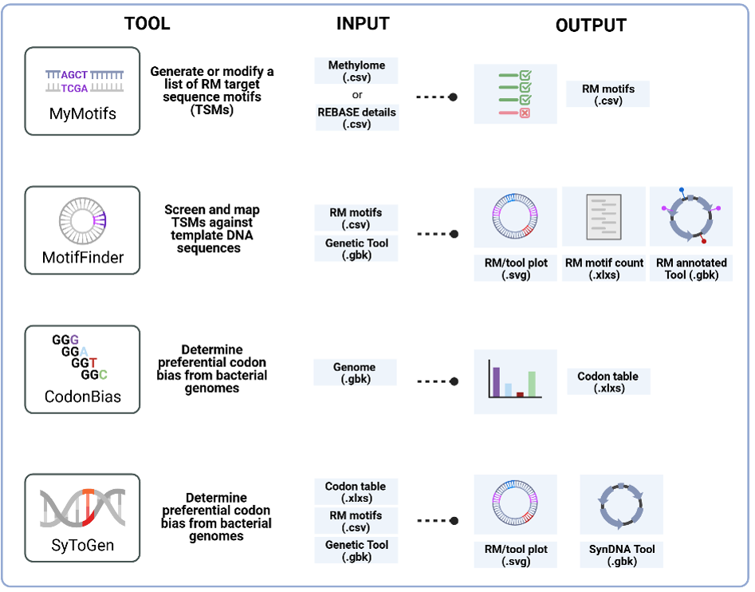

User Guide to SyToGen Modules

MyMotifs
MyMotifs allows users to define, import, or edit the restriction-modification (RM) target sequence motifs from a bacterial strain or collection of strains. RM motifs are the short DNA sequences that restriction endonucleases (REase) recognize as foreign when they are inappropriately methylated or unmethylated; they therefore determine the exact positions in a genetic construct that can be altered during RM-silencing to improve transformation efficiency.
To use MyMotifs, the following input is required:
- PacBio methylome data - raw motif summary tables from PacBio sequencing technologies, provided in CSV format.
- REBASE “details” files - available through REBASE. Go to REBASE
- Motif table - custom .csv motif table prepared by the user including characterized or inferred motifs.
- Manual motif entry - for newly characterized or curated motifs via the interface.
MyMotifs processes these inputs to generate a comprehensive list of RM target motifs specific to the bacterial strain(s) of interest. This list can then be exported in various formats for use in downstream applications.
Outputs include a RM motif table, summary report, and any flags or notes from the annotation.
MotifFinder
MotifFinder maps RM motifs across genetic constructs and determines where edits must be introduced.
Input required:
- Genetic tool sequences in GenBank format (.gbk).
- RM motif table from MyMotifs in .csv format.
Outputs include a motif-mapped GenBank file, summary table, and validation report.
CodonBias
CodonBias calculates strain-specific codon-usage patterns to guide synonymous edits.
Input required:
- GenBank bacterial genome file containing all coding sequences.
Outputs include codon-usage table, summary report, and internal codon-preference metrics.
SyToGen
SyToGen performs RM-silencing of genetic tool sequences using MotifFinder and CodonBias information.
Input required:
- Motif-mapped GenBank file from MotifFinder.
- RM motif table in .csv from MyMotifs.
- Codon-usage table in .csv from CodonBias.
- User-defined constraints for selection of editing regions.
Outputs include RM-silent construct, detailed edit report, alternative redesign solutions, and graphical summaries/logs.